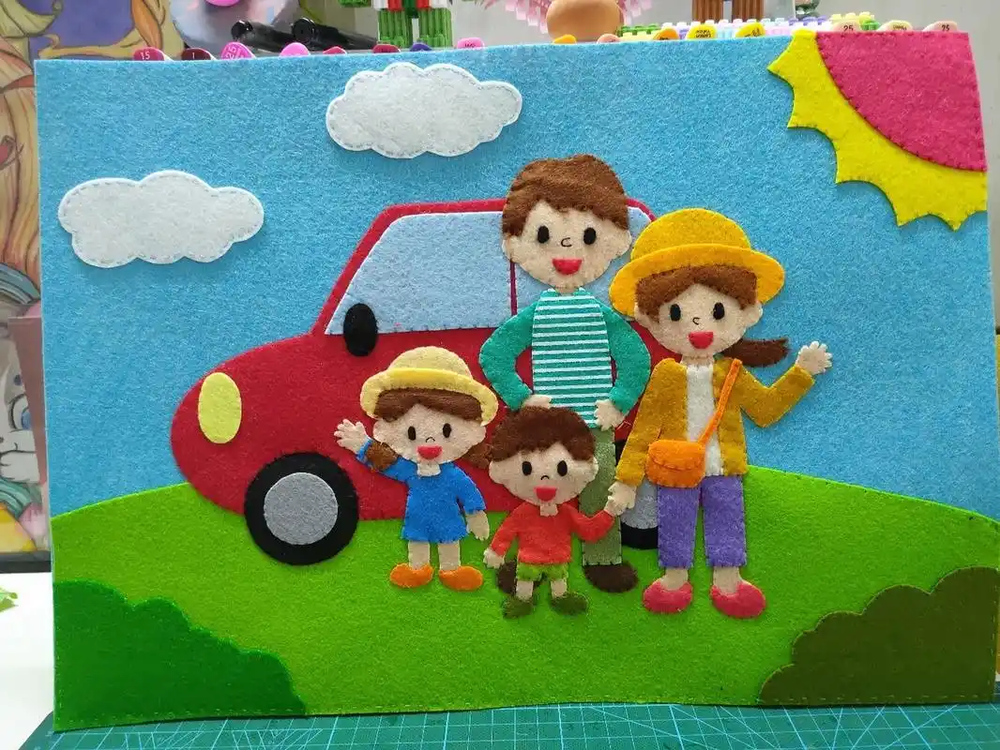

个人故事：梁常花家庭
佛山市禅城区的梁常花家庭是一个绿色环保、爱岗敬业的三口之家。梁常花是禅城区环境卫生技术中心环境卫生室的一名工作人员，负责禅城区环境卫生质量督查，从事环卫工作36年。她的丈夫也曾经从事环卫工作29年。梁常花一家不仅自己践行绿色环保生活，还乐于助人，帮助单亲家庭和邻居老人，影响亲朋好友践行绿色环保生活。
绿色生活不仅促进个人健康，还通过减少污染、节约资源来改善环境，实现可持续发展。它鼓励我们与自然和谐共处，对社会长远发展具有积极而深远的影响。
佛山市禅城区的梁常花家庭是一个绿色环保、爱岗敬业的三口之家。梁常花是禅城区环境卫生技术中心环境卫生室的一名工作人员，负责禅城区环境卫生质量督查，从事环卫工作36年。她的丈夫也曾经从事环卫工作29年。梁常花一家不仅自己践行绿色环保生活，还乐于助人，帮助单亲家庭和邻居老人，影响亲朋好友践行绿色环保生活。

她是康大姐志愿者协会的副会长，积极利用废旧物品进行创意改造。例如，她用旧横幅、旧窗帘等材料制作宣传牌，用旧衣物制作坐垫和围裙等。她还指导村民进行垃圾分类和环保活动，传递爱心和环保理念。
金龟社区在绿色生活社区建设方面取得了显著成效。社区积极响应区委、区政府的工作方针，挖掘生态特色，整合文旅资源，推动志愿服务和绿色发展。具体措施包括：
党建引领：通过党建引领，激发志愿服务新活力，成立以股份公司党员为主的物业管理班子，解决群众急难愁盼问题。
生态保护：推动金龟河河道整治，保护河道两旁的“水翁”树群，建立亲水体验区、露营体验区和浅滩戏水区。
灾害防范：构建山洪灾害防御体系，强化预报、预警、预演、预案“四预”措施。
文化休闲：打造自然文化休闲空间，改造升级老旧房屋，建立自然主题书房1。
福兆社区通过绿色发展理念贯穿社区设计、建设、管理和服务等全过程，构建共建共治共享的社区治理体系。具体措施包括：
组织领导：成立“绿色社区创建行动工作领导小组”，发动在职党员和居民参与创建行动，组建各类志愿服务队伍。
基础设施改造：推进雨污混接工程，消除安全隐患，推动适老化改造和无障碍设施建设。
智能化管理：实现全域加装电梯智能监控设备，推动门禁管理、停车管理、公共活动区域监测等领域智能化升级。